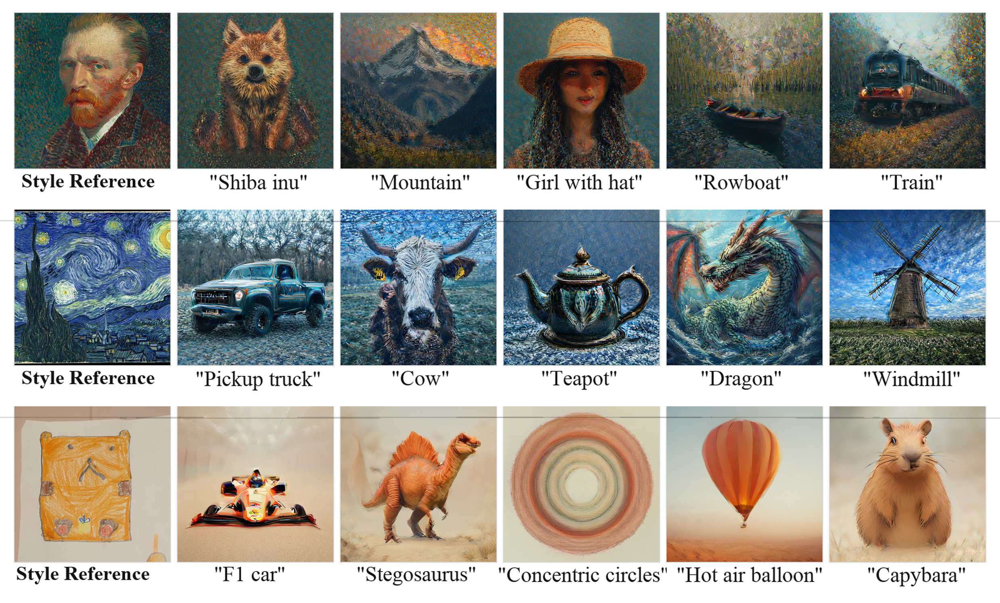
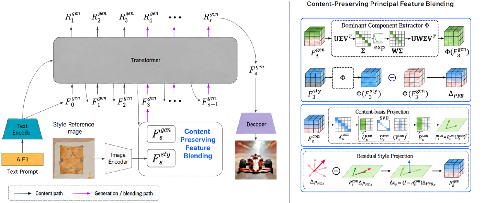
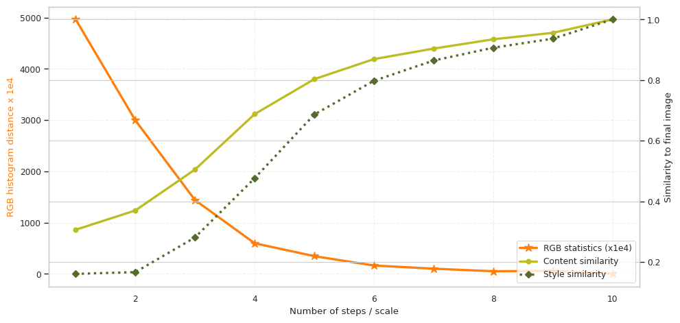
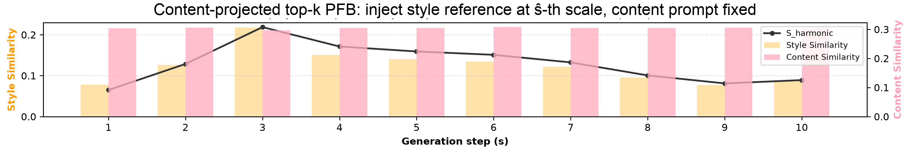
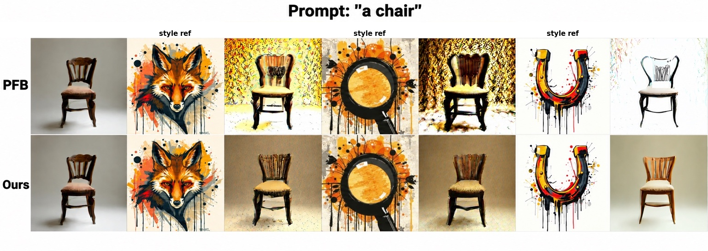
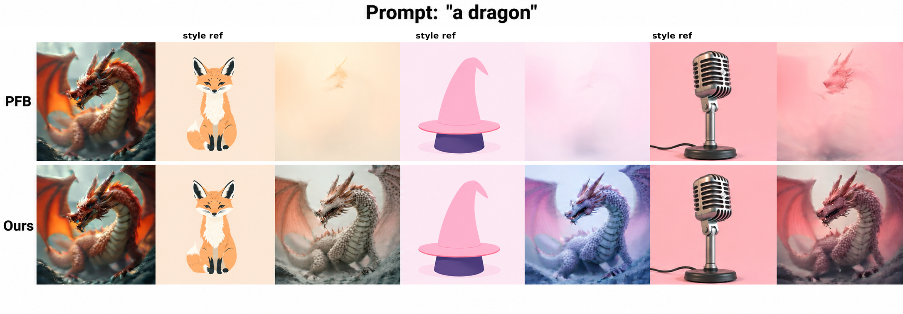
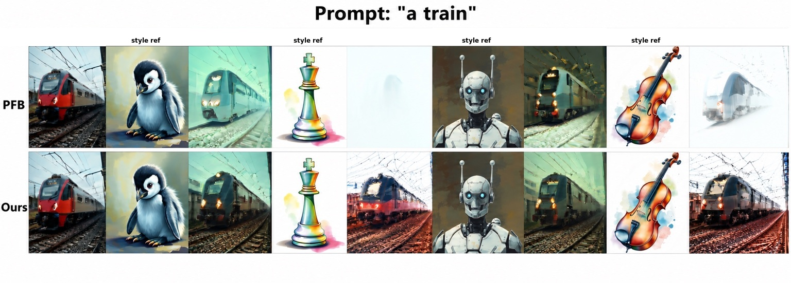

SOICT 2026
Content-Preserving Principal Feature Blendingfor Training-Free Style Personalization
1 University of Science, Ho Chi Minh City 2 Vietnam National University, Ho Chi Minh City
† Equal contribution ‡ Corresponding author

Abstract
Reference-based style personalization should reproduce the appearance of a style reference while preserving the subject specified by a content prompt. In visual autoregressive models, dominant reference features can also carry object and spatial information, causing content leakage.
We propose Content-Preserving Principal Feature Blending (CoPFB), a training-free method that estimates a low-rank content basis from a clean generation branch and removes the content-aligned component of the style residual. A hybrid multi-scale schedule then applies conservative early edits and weaker content-filtered refinement at later scales.
Method Overview

CoPFB follows the coarse-to-fine trajectory of visual autoregressive generation. It keeps the clean content stream as a reference, forms a style residual through Principal Feature Blending, and projects away the directions aligned with the requested content.
- Build a clean content basis. Extract dominant channel directions from the unmodified generation stream.
- Form the PFB residual. Compare style-reference and generation features through the same reconstruction.
- Remove aligned components. Project the residual away from the content basis to reduce content leakage.
- Blend by scale. Use conservative early edits, projected refinement at intermediate scales, and no injection afterward.
Quantitative Comparison
All methods are training-free and use identical prompts, references, seeds, and sampling settings. CoPFB reaches 0.297 text similarity, 0.577 image similarity, and the strongest harmonic score of 0.393, with an inference time of 2.0 ± 0.2 seconds per image.
| Method | Text ↑ | Image ↑ | Harmonic ↑ | Time ↓ |
|---|---|---|---|---|
| PFB+SAC | 0.293 | 0.590 | 0.391 | 3.8 ± 0.6s |
| Content Projection (R3) | 0.295 | 0.561 | 0.387 | 1.9 ± 0.3s |
| CoPFB Hybrid | 0.297 | 0.577 | 0.393 | 2.0 ± 0.2s |
Analysis & Ablations


Rank 1 gives the best harmonic score; larger protected subspaces remove more style-relevant directions. Projection improves prompt fidelity, while SAC provides structural guidance during later refinement.
Component ablation
All variants use the same PFB backbone on the 1,900 evaluation pairs.
| Variant | CP | SAC | Text ↑ | Image ↑ | Harmonic ↑ |
|---|---|---|---|---|---|
| PFB only | — | — | 0.255 | 0.572 | 0.353 |
| PFB+SAC | — | ✓ | 0.293 | 0.590 | 0.391 |
| PFB+CP | ✓ | — | 0.284 | 0.563 | 0.378 |
| PFB+CP+SAC | ✓ | ✓ | 0.295 | 0.561 | 0.387 |
Content-basis rank
| Rank | Text ↑ | Image ↑ | Harmonic ↑ |
|---|---|---|---|
| 1 | 0.295 | 0.561 | 0.387 |
| 2 | 0.288 | 0.554 | 0.379 |
| 4 | 0.281 | 0.547 | 0.371 |



BibTeX
@inproceedings{bui2026copfb,
title = {Content-Preserving Principal Feature Blending for Training-Free Style Personalization},
author = {Le-Hoang Bui and Hoang-Nguyen Cao and Trung-Nghia Le and Minh-Triet Tran and Dinh-Khoi Vo},
booktitle = {Proceedings of SOICT 2026},
year = {2026}
}